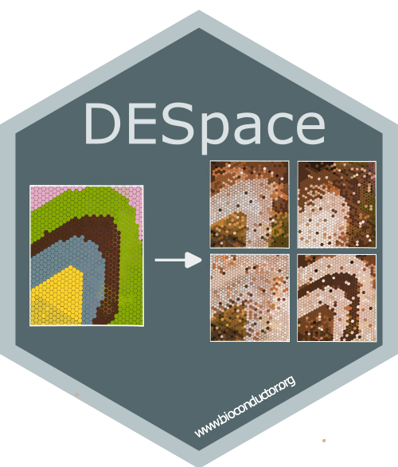

DESpace: a framework to discover spatially variable genes and differential spatial patterns across conditions

DESpace is a framework for identifying spatially variable genes (SVGs), a common task in spatial transcriptomics analyses, and differential spatial variable pattern (DSP) genes, which identify differences in spatial gene expression patterns across experimental conditions.
By leveraging pre-annotated spatial clusters as summarized spatial information, DESpace models gene expression with a negative binomial (NB), via edgeR, with spatial clusters as covariates. SV genes are then identified by testing the significance of spatial clusters.
For multi-sample, multi-condition datasets, again we fit a NB model via edgeR, but this time we use spatial clusters, conditions and their interactions as covariates. DSP genes are then identified by testing the interaction between spatial clusters and conditions.
Check the vignettes for a description of the main conceptual and mathematical aspects, as well as usage guidelines.
Peiying Cai, Mark D. Robinson, and Simone Tiberi (2024).
DESpace: spatially variable gene detection via differential expression testing of spatial clusters.
Bioinformatics. Available here
Peiying Cai, Mark D. Robinson, and Simone Tiberi (2025).
DESpace2: detection of differential spatial patterns in spatial omics data.
bioRxiv preprint. Available here
Bioconductor installation
DESpace is available on Bioconductor and can be installed with the command:
if (!requireNamespace("BiocManager", quietly=TRUE))
install.packages("BiocManager")
BiocManager::install("DESpace")Vignette
The vignette illustrating how to use the package can be accessed on Bioconductor or from R via:
vignette("DESpace")or
browseVignettes("DESpace")